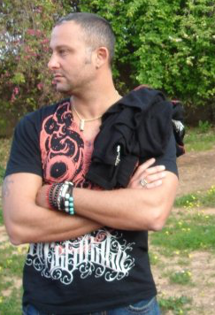
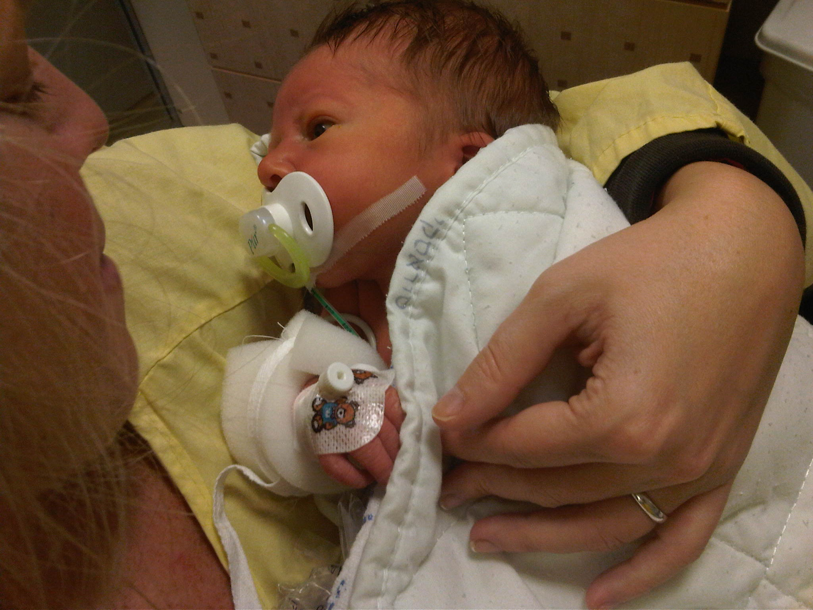

The Crew
Our company is not made out of diamonds. It is made out of people. This is our crew.
proximus coegit amphitrite fixo instabilis tuba pluvialibus finxit locoque austro
silvas tum primaque coeptis ardentior peregrinum tractu peregrinum austro dei sanctius
habitandae effervescere.

Alon is defenitelly the heart and soul of the team. He began designing jewelery at the age of 14, and never stopped. At his free time he likes to shop for new clothes, buy expensive toys and take care of his lovely wife Liron, and there new beloved sun Junior.

Junior just joined the company a few weeks ago, but already feels in place. After being recruited to the team by his Father Alon , he began to show some interesting designs and ideas. When he's not designing new stuuf, youll find him hitting on cute blonde nurses in the hospital. He's defenitelly unexperienced, but he has a great future in front of him.